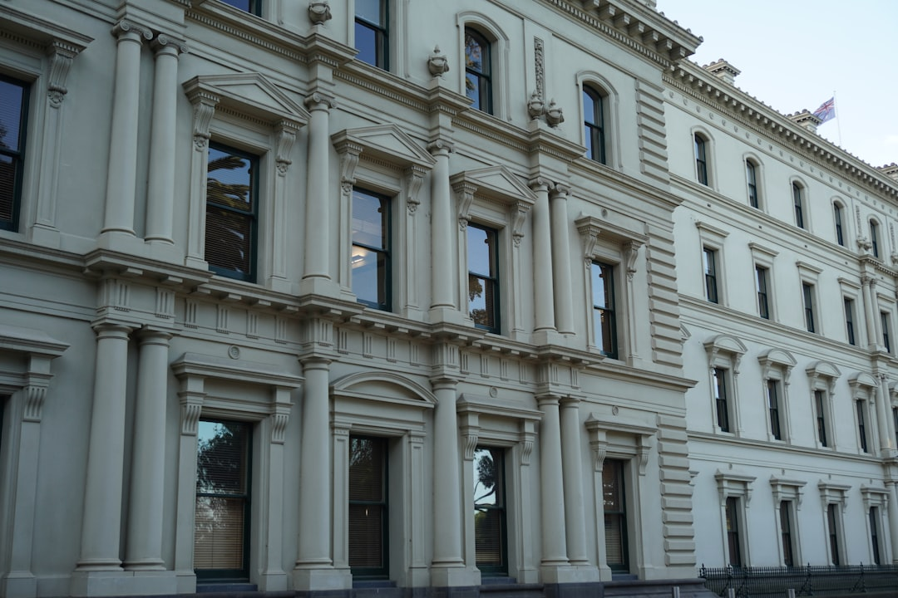

A Melbourne bathroom renovation is usually shaped by room size, layout changes, waterproofing, plumbing, electrical work, access and finish level. The source page gives a typical full-renovation range of about $8,000 to $35,000, with premium custom work able to exceed $35,000, and cites an Australian average bathroom renovation spend of around $26,000. Treat those figures as planning anchors, then test the real scope before comparing quotes.
For homeowners comparing bathroom renovations melbourne options, the useful starting point is not tile colour, but the room type, access constraints, waterproofing scope and quote assumptions.
Bathroom Renovations Melbourne Explained
Melbourne Bathroom Renovations frames the first decision around the actual room, not a generic makeover. A leaking or tired main bathroom, a compact ensuite, an apartment wet area and a linked laundry or powder-room update can all need different quoting questions, even before fixtures are selected.
The source page is useful because it separates layout, waterproofing, access, strata and finish decisions early. That is a practical order for Melbourne homes where apartments, terraces, period homes, family houses and narrow bathrooms can turn a simple wish list into a different build problem. A South Yarra apartment with owners-corporation friction is not described as the same project as a Glen Waverley ensuite or a Brighton premium rebuild.
- Write down what frustrates you now, such as storage, ventilation, clearance, leaks, darkness or an awkward layout.
- Note whether the plumbing location is expected to change, because that can alter trade scope.
- Record access issues, apartment rules or strata approval questions before asking for a fixed quote.
- Separate essential repairs from finish preferences so the scope does not drift during quoting.
Who This Applies To
This guide applies to Melbourne homeowners preparing for a full bathroom renovation, ensuite upgrade, small bathroom remodel, apartment wet-area project, waterproofing and tiling scope, accessibility change, or connected laundry and powder-room work. Those categories are drawn from the source page, so they should be treated as practical starting points rather than a complete list of every possible building scenario.
The clearest fit is a homeowner who is close to requesting quotes but still needs to make the first conversation more useful. If the job is only a cosmetic refresh, the same checklist may still help, but the cost and compliance questions will depend on what is actually being opened, replaced or moved.
For a broader editorial companion on the same Melbourne renovation topic, see this bathroom renovation planning note for Melbourne homeowners.
Cost Signals To Clarify Before Quotes
The source page states that a full Melbourne bathroom renovation commonly falls somewhere between about $8,000 and $35,000, depending on size, layout changes and fixture or finish quality. It also says custom designs with premium tiles, stone benchtops and high-end tapware can exceed $35,000, while labour is often a large share where waterproofing, plumbing or electrical work is involved.
Those numbers are broad enough to be useful but not precise enough to choose a contractor. A quote conversation should identify what the figure includes, what is excluded and which assumptions could change. A low initial number is not directly comparable with a higher quote if one includes demolition, waterproofing, tiling and fit-off details while the other leaves major allowances open.
- Ask whether demolition, waterproofing, tiling, plumbing, electrical work and fit-off are all included.
- Ask which fixtures, tiles, tapware, cabinetry or stone selections are allowances rather than fixed selections.
- Ask what happens if hidden waterproofing, access or substrate issues are found after work begins.
- Ask whether the quote is for a complete renovation, a compact layout improvement or a narrower repair.
Waterproofing, Layout And Finish Need One Scope
The strongest planning signal in the source page is that wet-area compliance, layout efficiency and finish quality should be treated as one scope. That is a helpful discipline for bathrooms because design decisions affect practical work. A storage niche, larger vanity, changed shower position or premium tile choice can alter waterproofing, plumbing, electrical or tiling assumptions.
For bathroom renovations melbourne homeowners are comparing, the safer brief is a written description of the whole job before selections harden. The source page says the quoting contractor sets out renovation scope, exclusions and quote assumptions in writing before commitment. That written scope should be specific enough to show how the room will function, not just how it will look.
Apartment bathrooms deserve extra early attention because the page specifically mentions access, strata and owners-corporation friction. The useful question is not whether apartments can be renovated in general, but what approvals, access rules and wet-area details affect the particular building.
What To Prepare For A Review
A strong enquiry can be short. The source page asks for suburb, bathroom type, rough scope, current frustrations, layout changes and any apartment or access complication. Those details give a contractor enough context to decide whether the next step is a full quote, a cost review, an approval conversation or a tighter layout rethink.
Prepare one plain-language brief before you speak to anyone. Include the suburb or postcode, the type of room, whether it is a family bathroom, ensuite, compact bathroom, apartment wet area, laundry or powder-room link, and the result you want. Add photos if requested by the contractor, but make the written brief clear enough to stand alone.
- Describe the existing problem before listing preferred finishes.
- Say whether you expect the layout to stay put or change.
- Identify access limits, stairs, apartment rules or approval questions.
- Ask for scope, exclusions and quote assumptions in writing.
- Define the room type. Write whether the job is a complete bathroom, ensuite, compact bathroom, apartment wet area, accessibility change, or linked laundry and powder-room scope.
- List constraints first. Record layout changes, waterproofing concerns, access limits, strata questions and current frustrations before selecting finishes.
- Use the cost range carefully. Treat the stated $8,000 to $35,000 range and $26,000 average as broad planning markers, not as a fixed quote.
- Request written assumptions. Ask the contractor to state inclusions, exclusions, allowances and quote assumptions before you commit.
| Starting point | Useful when | Questions to ask before pricing |
|---|---|---|
| Complete renovation | The room is tired, leaking or impractical and needs demolition, waterproofing, tiling and fit-off considered together | What is included in the written scope, and which assumptions could change after demolition? |
| Ensuite or small bathroom | The room is cramped, dark, narrow or short on storage, ventilation or clearance | Which layout changes improve function without creating avoidable plumbing or access complications? |
| Apartment wet area | The bathroom is affected by strata, owners-corporation, access or building constraints | What approvals, access arrangements and wet-area compliance items need to be settled before work starts? |
Common questions
How much should I budget for a Melbourne bathroom renovation? The source page gives a typical full-renovation range of about $8,000 to $35,000, with premium custom projects able to exceed $35,000. The right working budget depends on room size, layout changes, labour scope and finish selections.
Why can quotes vary so much? The source page points to labour rates, trades availability and compliance requirements, especially waterproofing, licensed plumbing and electrical work. Quotes also differ when inclusions, exclusions and fixture allowances are not the same.
What should I send before asking for a quote? Send the suburb or postcode, room type, rough scope, current frustrations, expected layout changes and any apartment, access or approval complication. Those details help turn a broad renovation idea into a more useful first conversation.
Is an apartment bathroom scoped differently from a house bathroom? It can be. The source page specifically mentions apartment wet areas, access, strata and owners-corporation friction, so those items should be raised before pricing or design decisions are treated as settled.
This guide covers Melbourne bathroom renovation planning, cost signals, room scope, waterproofing questions, access issues and quote preparation.